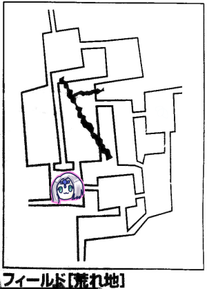
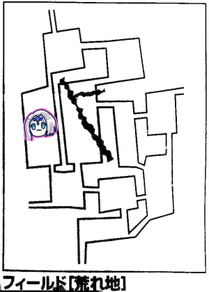

結果的に2020年最後のセッションになったエターナルリプレイです！
前回は廃都ウルトゥケを見つけて挑んだものの目的のものは見つかりませんでした。
いったん廃都の探索ミッションは諦めるということになっております。
ここで「ミッションをいったん破棄する」という選択をした場合、以下のようになる模様。
・元々★1つ200点だがミッションの破棄で100点になる。つまりもらえるけど半額になる。
・経験点の清算自体はできる
・但しモンスターの経験点はそのまま精算できない
現在の未精算★数は4つ。
なんかもったいないのでミッション受けたままの状態でクエストの方を回すことになりました。
GM「ミッションのついでにやる立ち位置なのがクエストで、現状今受けられるものは時間制限がなく、逆に短時間の達成でボーナスが出ます。時間経過で不利になることは今はないです」
「今は？」
GM「今はって言うのは、時間経過で蛮族がセズウィックに襲撃してくることがあるんですね。ただ、村が要塞化してるからねー、正直強い、これ攻略できるのかってGM側が思ってる」
「じゃあ配達クエストしましょうか」
現状の配達状況：
・ルキスラのダンカン商会からローレンス宛ての荷物を届けた
・ルキスラのマギテック紹介からローレンスに手紙を届けた、ローレンスから返信はもらっている
つまり街に行って報告するだけで★2個を獲得できるわけですね。
GM「あとはルキスラでは騎士団の粗末な武器の納品クエストが受けられますね。実は砦の攻略はこれの後に発生するはずだったんですよ」
ブルーローズ「我々の前に粗末な武器を持った敵が現れるかが問題」
GM「買うという手があるよ」
みぞれ「買えるの」
GM「ドロップ品が買えるルールがあるはず。多少高くつくけどね、村にお金落とす？」
みぞれ「お金落として要塞化を、いや違った商業を発展させよう、経済回していこう」
GM「みぞれの本音が。ええと、アルケミストワークスに粗末な武器の値段が載ってますね。1つ20ガメルです」
ブルーローズ「よしななっしー、パーティー財布から400ガメル出して」
ナナシ「よっしゃ」
GM「安く星が手に入るんだな」
ナナシ「意匠を凝らした武器とか持ってるけどこれで満足してもらえないかな」
GM「そっちがいいならそっちでもいいよ。それ売値150ガメルだけど」
ナナシ「妄言吐きました」

GM「主の行動を決めてください、ブルーローズ」
ブルーローズ「あっごめん、どどんとふにログインしてなかったからダイス振れない」
ナナシ「代理で振ろうか、6」
ブルーローズ「ブルーローズが振らなかった分主を避けたはず！あ、イベント3です」
GM「旅人がいます。『セズウィック村に行こうと思ってるんですが』」
みぞれ「すぐそこだよ！あっこれオアシス経由しなきゃいけないやつだっけ」
GM「そうです。『オアシスに忘れ物をしてしまったので一度寄りたいです』」
みぞれ「我々これからルキスラまで行くけどいい？」
GM「大丈夫です。元々街から有名なセズウィックに向かうところだったので。あの有名なセズウィックの盾にお会いできるのが今から楽しみで」
ナナシ「控えめに言って我々のことですね、サインいるかい？」
旅人「え？でもセズウィックの盾にはゴリラのような太い腕を持った女性がいるという話を聞いたんですが…」
ブルーローズ「ちょっとその話の出所を教えてもらえるかしら？」
GM「この称号、セズウィック村の中だと有名だけど村以外では噂が独り歩きしてるんですね」
タッシュ「この称号、名誉点20点だから馬の骨扱いなのか」
南へ移動。

ブルーローズ「イベント4です」
GM「荒れ地イベントです」
ブルーローズ「種類は6」
GM「漬物石のような石がごろごろしています。それが突然合わさってノームになりました。ピーターなら一発でノームと分かります」
ピーター「やっほー」
ノーム「やっほー」
みぞれ「妖精の挨拶」
ピーター「これで仲良くなった」
ノーム「こちらに戦う意思はないがそちらはどうだ、ワンダリングヒューマンとか勘弁だぞ」
敵意はないことを告げて、探索結果の片方を6にしてもらいました。
みぞれ「前これで遺跡見つけた気がする。探索しまーす。あっ遺跡見つけた」

タッシュ「イベント1です。平和だ」
GM「冒険者が忘れ物を取り戻しました。忘れ物はルキスラに置いてきた恋人からもらった木綿のハンカチーフです」
みぞれ「ここの宿屋に忘れ物注意って張り紙しておきたい
GM「今後遺品に木綿のハンカチーフが出てきたらあっこいつかって思ってください」

ピーター「イベント2です」
GM「何も起きません」
GM「木綿のハンカチーフ君は既に濃厚な別れを恋人や友人としたのでルキスラの入口で待ってます」
ブルーローズ「穴を開けたずた袋をかぶせて連れていきます」
ダンカン商会にお届け物の報告をしました。
騎士団本部へ。
ゼノヴィアは元気にしているかとか新米騎士の話などの雑談をしつつ、粗末な武器を渡しました。
ブルーローズ「で、蛮族の砦イベントは今発生するんですか？」
GM「ちょっと時を戻そう。ダンカン商会に報告したら2個目のクエストが発生します。内容は、シーンの神殿があるので見つけて欲しいとのことです」
「それ知ってる。台地のベラドンナがいたところだよね」
みぞれ「あそことんでもない怪物がいるので気を付けてくださいね」
ダンカン商会「そうですか、それはこちらで考えます。でもあの人は行くって言うんだろうなあ…」
「意味深」
GM「はい、クエストクリアです。これで3個目のクエストが発生します」
ブルーローズ「他にもお困りのようですね？」
ダンカン商会「湖のエリアにエルフの集落があるという話があります。湖の産物でエルフが物を作っている可能性が高いので取引がしたいのです。エルフの村を発見して場所を報告してもらいたいのです」
「エルフって取引に応じてくれるのかな」
GM「交渉自体はダンカン商会がやってくれるので場所だけ伝えればよいです」
GM「てことで蛮族の砦の話に戻します。荒れ地の一番北にある砦を攻略してほしいそうです。これが騎士団クエストの2回目になりますね。武器の納品がクエスト1回目です」
マギテック協会でローレンスからの返信を渡しました。
GM「事務員のおじさんが受け取ってくれました。そしたら20代前半の女性とローブを着た利発そうな少年10歳ぐらいが手紙を受け取りに入ってきました。少年はローブが体にあっていない感じです。一番小さい頃のハリーポッターを思い浮かべてください。ローレンスからの手紙は2通あり、それぞれ女性と少年に手渡されました」
カレン「彼らがセズウィックの盾よ。初めまして、私はカレン・ランプリング、そしてこの子はエリアスです」
エリアス「父がお世話になっています」
みぞれ「うおー息子だ」
タッシュ「まさかの息子」
GM「あと2回手紙のやり取りすると特殊イベントが発生します。クリアには関係ないけど世界観を深めるイベントになっています。そして手紙のやりとりとは別にクエスト2が発生します。叡智の水が欲しいそうです。これはエターナルオリジナルアイテムになります。どこにあるかは推理してください」
「ヒントなし？」
GM「ないです。知名度判定しておきましょうか、目標秘密です」
ピーター「20」
GM「知名度は15でした。結構難しいんだけどね、ピーターに付き合ってるとマヒしてくるね。えーと、これは非売品で消耗品です。瑠璃色に輝く液体で古代魔法文明のものになりますね。売れば2万ガメルになります。能力値成長の時に使うと知力をピンポイント指定できるアイテムです」
ナナシ「敏捷の水とかないかな」
GM「このクエストでマギテック協会に持ってくれば3万ガメルになるので売るよりお得になります」
「さてどうしよう？」
「荒れ地の北の蛮族の砦に行って上のエリアに行って湖畔を見つけて戻ってくるのはどうよ」
「今木綿のハンカチーフ君がいるから」
GM「冒険者はモンスターと戦闘、イベントで自分で対処するので別扱いになります。崖崩れとか商人とかはかばう必要あるけど冒険者は自分で対処しますよ」
「じゃ北に行くか」
GM「木綿のハンカチーフ君はクエスト処理に引き回されてようやく本物のセズウィックの盾だと気付きました」
木綿君「どなたがブルーローズさんなんでしょうか」
ナナシ「おれおれ」
ブルーローズ「わたしですわ」
タッシュ「ここで名乗りを上げる」
ナナシ・ブルーローズ「どうぞどうぞ」
木綿君「随分堅そうですね」
騙してる、騙してる！
GM「さて、じゃ出発ですね。エリア3回またいだので3日経ったことになります」
GM「では主移動をどうぞ」
ブルーローズ「2です」
みぞれ「イベント5でーす」
GM「偶数で旅人、奇数で荒れ地イベントになります」
みぞれ「珍しいパターンだね？6」
GM「荒地イベントの6ですね。ノームが出てきます」
ピーター「やっほー」
みぞれ「おとといも会ったよね」
GM「それは違うエリアのノームじゃないかな」
ピーター「敵対意思はないよ」
タッシュ「はやい」
GM「この辺における探索のコツを教えてもらいました」
みんなで探索振ったけど錆びた槍一択になりました。

GM「ここは谷間イベント表という特殊なイベント表になります。ナナシ振ってください」
ブルーローズ「代理で振ります。3」
GM「荒れ地イベントです」
みぞれ「荒れ地イベントが谷間イベントになるんじゃないんだ」
GM「谷間イベントは荒れ地イベントの改造版で、何も起きないって結果があんまないの」
ブルーローズ「3」
GM「ころころころと落石が落ちてきます」
「ころころってｗ」
GM「これが出目によっては酷くなって大規模な落石になります。目標値13です」
ピーター「素目でしか振れない…失敗しました」
GM「19点物理ダメージです。あと木綿のハンカチーフ君が落石に飲まれていきます。『このハンカチーフがなければ即死だった…』」
ピーター「チートアイテム臭がします。じゃウィスパーヒール撃ちます」
「キュアハートでいいんじゃない？」
木綿君「狡猾タビットと名高いピーターさんのウィスパーヒールが浴びられないのは残念です」
ブルーローズ「冒険者さんには手もちのポーション飲んでもろて。うさちゃんにキュアハート。あとビビッド歌います」
GM「あ、ビビッド歌った？発動判定して欲しい」
ブルーローズ「え？発動しましたよ？」
GM「達成値が欲しいです」
ブルーローズ「10です」
GM「谷間にブルーローズの歌が朗々と響き渡る。危険感知をお願いします」
ピーター「22！」
ナナシ「ピーター危機管理意識高いね」
GM「感知に成功したピーター、ナナシ、みぞれはこのまま歌い続けると崖崩れが起きることがわかります」
「3人でブルーローズに飛びかかります」
ブルーローズ「ちょ」
GM「ここは大きな音を出すと崖崩れを誘発することが分かります。歌だと達成値10なんですね。ナナシいまくしゃみしたでしょ、振ってください」
ナナシ「1！何も起こりません！」
GM「ここで戦闘が起きると…わかりますね」
みぞれ「ひええ」
GM「スーパー広範囲エリア攻撃になるから敵味方関係なくなるんだけどね」
GM「鋭く切り立った岩山に鋭い裂け目があり、そこに関所が作ってあります。北へ行くにはそこしか通れないようになっています。関所は物見やぐらがあるので気づかれずに近づくのは至難の業です。視線を遮られない距離は120mほどあります」
タッシュ「操霊魔法にディスガイズってのがあるからみんなで蛮族に変装するか」
ナナシ「おれトロールがいい」
タッシュ「サイズは変えられないんだよね」
ナナシ「じゃダメだ、うさちゃんはコボルドでしょ」
ブルーローズ「ドレイク5人で突っ込んだらえっ俺ら何かしたっけてなるんじゃない？」
ナナシ「全員変装するんじゃなくて人間を捕まえてきましたーってやればいいんじゃないの」
協議の結果、ピーター＆タッシュが蛮族に化けることになりました。
「引きずられる人間は3人になるのかな？」
「木綿含めて4人だね」
ブルーローズ「数があれなんで私あんまり喋らないミノタウロスになります」
タッシュ「じゃ3人分ディスガイズかけます。私がボガードトルーパー、ピーターがコボルドね」
「人間を紐で繋いで、簡単に紐がほどけるような感じにしておきましょう」
ブルーローズ「ブルーローズが2人ほど担いでー」
みぞれ「担ぐの！？」
ブルーローズ「みぞれちゃんを肩に担いで、ナナシを引きずるような感じで行きます」
ナナシ「いつかひき肉にしてやるからな！」
ブルーローズ「黙れ！ゴンっ！」
GM「じゃ関所に向かいましたね。見張りに近づくと目が合います。そうすると魔物知識判定が可能になります」
ピーター「24」
タッシュ「しゅごい」
GM「弱点なんか遥かに抜きました、アンドロスコーピオンです。下半身がサメ、違ったサソリです」
ナナシ「願望が出てるやん、サメであって欲しかったんだね」
GM「彼は改造要素がありましてね、特殊能力に銃撃ってあるじゃないですか、それでこいつ射程が100mあります」
タッシュ「狙い打ってくるのか」
GM「相手が喋りかけてきます。これはこれは、と手を広げて。こんなところにミノタウロスがいるとは思わなかった。とうとう閣下も本腰を入れたということか」
ナナシ「ブルーローズ、親指立てて親指」
ブルーローズ「何言ってるかわからないけど友好的な感じの雰囲気を出します」
GM「ブルーローズ蛮族語わからないのか。いったん通話オフにしてくれる？今からこの会話は汎用蛮族語が分かる人にしか分かりません」
見張り「ノルゴワル殿は援軍をこちらに送っていただけたということでよろしいかな」
ピーター「ぴょんぴょん存在アピールします。ミノタウロス様がお前のような下っ端を相手にするわけがなかろう！さっさと責任者を連れてこい！」
GM「見張りは、この犬ころ風情が！ちっと舌打ちをして誰かを呼びにいきました。見張り台からアンドロスコーピオンがいなくなりました。ブルーローズ、通話戻ってきていいよ」
ブルーローズ「どんな感じですか？」
GM「ピーター＠コボルドがなんか言ったらアンドロスコーピオンがものすごい嫌な顔をして去っていきました」
ブルーローズ「このコボルド風情が！って感じ？」
みぞれ「すごい、正解だ」
みんなで走って関所へ移動しました。
GM「これで私の先制射撃が意味なくなりました」
ブルーローズ「ピーターに何を言ったのか聞きます」
ピーター「煽りました」
ブルーローズ「あ、ああ…」
ブルーローズ「これナナシを先頭に走らせて逃げた人間を追ってる風にした方がいいんじゃないの？」
GM「まあどのみち今から戦闘ですからね。ボガードソーズマン3匹、レッサーオーガ2匹、あとさっきのアンドロスコーピオンが現れましたよ。ソーズマンだけ前衛です。木綿君は君たちの脇でこいつらのお世話をしていたゴブリンと戦います」
ピーター「魔物知識判定しまーす」
全員弱点抜きました。
みぞれ「開幕グレネード前衛に撃ちます。19」
GM「全員抵抗失敗しました」
みぞれ「16点ダメージ」
GM「瀕死です」
ピーター「タッシュ先生範囲威力どれぐらいです？」
タッシュ「ファイアーボールで威力20」
ピーター「私、今回威力40があるので前衛の始末お願いしていいですか」
タッシュ「それじゃ敵の前衛に向かってファイアーボール、19」
GM「全員失敗」
タッシュ「15点ダメージです」
GM「ソーズマンは死んだ」
ピーター「ファイアーストームを残った後衛に撃ちまーす。12点払ってー」
みぞれ「12点」
ピーター「21」
GM「結構高いんだけど…抵抗するには2d6で15いりますね」
ピーター「レベル差がすごい」
GM「全員失敗です」
ピーター「22点ダメージです」
みぞれ「つええ！さすが威力40」
ピーター「威力40すごいですよ、ダイス目よりも数値の方がでかいんですよ」
ブルーローズ「お、ターンが回ってきた」
ナナシ「弾幕薄いよなにやってんの」
タッシュ「いや薄くはないから」
ブルーローズ「あれ？後衛までの距離って15m？足りないわ」
GM「移動力上げる手段持った方がいいよ」
タッシュ「韋駄天ブーツ、おすすめですよ」
ブルーローズ「仕方ないフォース撃つか」
ナナシ「草」
ナナシ「ナナシ動くね、前に出ます」
GM「15m動けますか」
ナナシ「27mまでいけます」
GM「じゃOKです」
ナナシ「アンドロスコーピオンの上半身…は普通に狙えるか」
GM「狙えます。下半身潰すと回避減るけど」
ナナシ「上半身を狙ってウィップで挑発攻撃、21」
GM「回避できません」
ナナシ「16点！じゃファストアクションでもう一発ウィップで上半身殴っておきますか。21」
GM「回避失敗」
ナナシ「1ゾロです…」
GM「これは経験にならないやつですね…」
ナナシ「2.5なら経験になるんだけどね」
ブルーローズ「もうフォースしかないんじゃないの？わたしナイトメアだから」
ピーター「そこに冒険者志望がいますけど」
ブルーローズ「それでびっくりするなら冒険者には向いてないわよって言うだけですね」
ナナシ「セズウィックの盾のリーダーがナイトメアってかっこよすぎでしょ」
GM「ブルーローズ得意のバニッシュじゃないの」
ブルーローズ「撃てと言われれば撃つよ？」
ナナシ「フォースって射撃だっけ？」
ブルーローズ「射撃だわ」
ナナシ「誤射の可能性があるね」
ブルーローズ「じゃバニッシュしていい？そしたら異貌化して10mぐらい前に出ようか。15」
GM「レッサーオーガ1だけ抵抗成功しました。レッサーオーガ2とアンドロスコーピオンがくらいました。効果表振ってもらいましょうか。1回ずつ振る？まとめて振る？」
ブルーローズ「1回ずつ振ります！レッサーオーガに5」
GM「レッサーオーガは恐怖に打ち震えます。行使判定に-1ペナ受けました」
ブルーローズ「アンドロに2。しまった！バーサーク化した！」
GM「アンドロスコーピオンは命中力+2、回避力-2されます。魔法一切行使できなくなりました」
「ファナティやね」
GM「こっちのターン！アンドロスコーピオンから撃つか。下半身から。あごめん、下半身分のバニッシュ判定も頼むわ」
ブルーローズ「両方に別の効果が適用されるんだ」
ナナシ「下半身逃げたらどうなるんだろう」
ブルーローズ「上半身バーサーク化してるのに下半身ぶるぶるぶるってなる」
ナナシ「下半身ちぎれたら面白いよね」
GM「これ下半身も挑発攻撃くらってるってことになりますので」
ブルーローズ「そうなんだ？」
みぞれ「モンスターによって違うような気がする」
GM「その辺ふわっとしてるんだよね。だからGMの裁定に従ってくれると嬉しいです」
ブルーローズ「こいつ大きさ的に一緒ってことなのかな」
「キングギドラとか別々になりそうだけどね」
GM「じゃいきまーす。下半身がナナシを狙って、18」
ナナシ「25、いつものやつで14点！」
GM「弱点適用するまでもなく沈みます」
GM「上半身、これ魔動機術使えないのか」
ブルーローズ「バーサークつよくない？バニッシュ一択だな」
GM「こいつ呪文と関係なく撃てるって表記になってるんだけど、魔動機術によるものと判断して撃てないことにします。じゃ18で攻撃」
ナナシ「21回避」
GM「スカートは入らなかったね」
GM「レッサーオーガは大きく息を吸って呪文の構えですね。後ろへの攻撃って阻害ってされるんだっけ？」
タッシュ「乱戦形成してるからできるのでは。てかファイアーボールを前後に放り込むのできたな、やっとけばよかった」
GM「リープスラッシュでブルーローズ狙おう。12、ひっく！」
ブルーローズ「精神抵抗だっけ。えーい、18」
GM「ですよねー」
ブルーローズ「わたしプリーストですので」
GM「12点、半減で6点ですね」
GM「レッサーオーガ2もリープスラッシュで狙うことにしよう。ナナシに撃ちなおします。10」
「そいつ行使判定-1じゃなかったっけ」
GM「そうでした」
ナナシ「19で抵抗」
GM「12点、半分で6点です」
GM「ラウンド2。ここでみぞれがー？」
みぞれ「グレネードで巻き込めと申すか。チアで」
GM「このパーティーに私の火で焼かれてしまうようなレベルの低い者はいない！」
ブルーローズ「ナナシ避けてー！って後ろからみぞれちゃんが」
ナナシ「ソードワールドじゃむーりー」
タッシュ「とりあえず前出てレッサーオーガ殴っとくか」
GM「15m動けますか」
タッシュ「動けます」
GM「動けるんだ」
タッシュ「素が14mなんです。韋駄天ブーツおすすめですよ。レッサーオーガ2を殴らせてもらおうかな。ヘビーメイスアタック！20」
GM「12、くらいました、ダメージください」
タッシュ「11点です」
ナナシ「レッサーの減ってるやつ処理して欲しい」
みぞれ「じゃレッサー2をソリバレのみで攻撃します。1ゾロ、やったぜ」
タッシュ「いい経験になった」
ブルーローズ「ブルーローズがアンドロスコーピオンを…」
ナナシ「いやレッサーをお願い、アンドロ残した方が楽」
ブルーローズ「じゃレッサー1を魔力撃で殴ります」
ブルーローズ「20」
GM「8、ダメでした」
ブルーローズ「29点ダメージ」
GM「死んだ」
ナナシ「ピーターってエコノミーに残り1匹落とせたりしない？レッサー残すと魔法が飛んでくるから」
ピーター「じゃウィンドカッターでレッサーオーガを攻撃します、21」
GM「12」
ピーター「16点です」
GM「はい落ちた、アンドロスコーピオンのみになりました」
ナナシ「ここで初のリカバリィを使ってみようかな。MP3点で全快します。でウィップで挑発攻撃します」
ブルーローズ「リカバリィ完全にやってみたかっただけって感じやね」
ナナシ「うるせぇ！」
ピーター「次フィールド移動で全快するからね、私もファイアーストーム撃てて満足したんで」
ナナシ「21」
GM「9」
ナナシ「15点ダメージ」
GM「ターン回ってきた！でもバニッシュで魔法撃てないので普通に攻撃、14」
ナナシ「24、反撃で13点」
GM「死にました」
GM「これで関所の問題が解決されました」
みぞれ「解決なんだ、連戦になるかと思ってた」
GM「クエストですんで」
ブルーローズ「またつまらぬ砦を潰してしまった」
GM「星が2個手に入りました」
ピーター「あっかけら剥がなきゃ」
「星かなり溜まってきたけどミッション放棄しないからレベルアップ大丈夫かな」
ブルーローズ「根性で今のレベルでウルトゥケをクリアしましょう」
北へ移動。
みぞれ「新しいフィールドだ。これシドから情報買えないのかな」
GM「配置してからしか買えないよ。あとこの北のフィールドが湖畔かどうかはまだ分からないからね」
「とは言っても判明してないフィールドあと2つだから50%で湖畔なんだけどね」

GM「おめでとうございます。ここは正解の湖畔です。湖の南側にあるエリアで、茂った木の枝葉が湖に影を落としています」
「わーい」
GM「さてクラーケンの移動を決めよう。おっとクラーケンって言っちゃった。移動決めてください。ブルーローズさーん」
ブルーローズ「現場のブルーローズです。2」
GM「イベント表タッシュ先生お願いします」
タッシュ「6」
GM「モンスターです。おめでとうございます！やっぱり湖畔で戦いたかったんですね」
タッシュ「種別は2です」
GM「全長20mほどあるウミヘビが2体とまばゆいほど明るい体毛に覆われている4つ足の獣が1体です」
ピーター「魔物知識判定します。ウミヘビ22」
GM「8レベルモンスター、シーサーペントです」
ピーター「8レベルモンスターが2体出てくるんですねこのレベル帯。4つ足の獣いきます、21」
GM「アダンダラです。両方弱点抜きました」
ナナシ「ケンタウロスレッグ入れて先制判定します。20、おっけーい」
みぞれ「前衛シーサーペントに向かってグレネード投げます、18」
GM「シーサーペント1の頭と胴体が抵抗しました。2は失敗です」
みぞれ「18点ダメージです！」
タッシュ「前後に魔法撃つか」
ピーター「前後できるんだっけ」
GM「重ねがけが無効なだけだからできるよ」
タッシュ「プランAでいきましょう。ファイアーボールを前後にかけましょう。18」
GM「シーサーペント2の頭だけ抵抗しました」
タッシュ「やったよ、27点」
ピーター「ファイアストームをシーサーペントに撃ちます。23」
みぞれ「ファイアーストームでいいの？つよくない？」
ピーター「手持ちの攻撃魔法が威力10か40しかないんで」
GM「全部失敗しました」
ピーター「22点ダメージです」
GM「シーサーペント全滅しました」
ナナシ「フォース先にいっとく？」
ブルーローズ「じゃあ異貌化して10mほど前に出てフォース撃ちます」
みぞれ「異貌化解いてるの？」
ブルーローズ「フィールド移動してるからどっかで解いてるんだろうなって思ってました。フォース！16」
GM「21、抵抗成功」
ブルーローズ「14点、半額7点です」
みぞれ「アダンダラ、人間に化けて子作りしようとするって書いてある、ロマンだね」
「それ陰獣じゃねーか」
ナナシ「デーモンフィンガー使います、ウィップで挑発攻撃18、あっこれはやばい」
GM「18、同値回避！」
みぞれ「こいつ弱点命中+1入れてる？」
ナナシ「あ入れてない、当たった、15点。次は…首狙いに行くか、首狙いでウィップで攻撃します。いい目出ろ！15…」
GM「弱点入れてないよね、じゃ16だね…19回避」
GM「アダンダラ攻撃行きます。こいつすげーたくさん選択肢あるんだよな。よし、お前はもう命がないだろう、やることは分かっているな、分かっている。任務了解」
「GMが一人漫才してる」
GM「魔法拡大数を使います。エネルギージャベリンを5倍がけします。8レベル真語魔法をくらえ！威力40はお前らの専売特許ではないのだ！」
ナナシ「これ、挑発対象以外に攻撃する時の行使判定にペナ受けるような書き方されてるけど」
GM「まじで…巻き込むならいいんじゃないかな」
タッシュ「それ範囲で巻き込むならOKだけどこれ数拡大だよね、明確に対象以外を攻撃することになるんだけど」
GM「いったんは数拡大でもペナ受けないものとします。この後それで詰むんじゃないかって思われる挑発持ちがいるんだよね、公式情報がない限りそれでお願いします」
ナナシだけ成功しました。
GM「ダメージは17点です、うーん低め」
ナナシ「じゃウィップで挑発攻撃15、うぎゃーーー低い」
GM「1ゾロ」
タッシュ「当たったんだ」
GM「ファンブル表は防護点無効です」
ナナシ「15点」
GM「しにました」
ナナシ「この戦闘終わったらブルーローズタッシュ先生に靴借りなよ」
ブルーローズ「タッシュ先生靴貸せよー」
ブルーローズ「ビビッド歌います、これ今回運命の楽譜ってのを持ってきてまして、これ持ってると効果2倍になるんですね。なのでMP2点回避してください」
GM「それって消費型？非消費型？」
ブルーローズ「え、考えてませんでした」
GM「えーと、消耗しないみたいね。ただこれ固定なんだね」
ブルーローズ「そうです、ビビッド専門の楽譜になります」
ピーター「ウィスパーヒール撃ちます」
ナナシ「魔力13か、すげーな」
ピーター「回避力おばけが何か言ってる」
ナナシ「他の人の見るとやっぱすげーってなる」
GM「移動どうしますか」
タッシュ「この触手みたいなの気になるよね」
GM「北側のやつですか？山です」
タッシュ「中央は行けるんだよね？」
ナナシ「ブルーローズエルフの端くれだから泳いで行ってもらおう」
どちらへ行こうか協議の結果、東は後で調べることにして西へ移動になりました。

GM「岬があります。岬の先は断崖になっています」
ピーター「イベント3です」
GM「釣り人イベント表を振ってください」
「釣り人」
ピーター「3」
GM「湖岸で岬の方を見ながら椅子に座って、湯気の立ったマグカップで紅茶を飲んでいるエルフがいます」
ピーター「わーい第一村人だー」
GM「傍らには大きなびくがあって魚がいっぱい入っています」
ピーター「やっほーって声をかけにいきます」
GM「やっほーって返してくれます」
「釣りのコツとかあるんですか」
エルフ「よい釣り場があるんですよ」
「教えてほしいなー」
ブルーローズ「この魚を運んであげる代わりに教えてもらいたい」
エルフ「わかった。そこに岬があるだろ？絶壁になってるんだけど階段があって降りれるんだよ。でその降りたところが広場になってて、いい漁場なんだ」
エルフの集落まで一緒に行くことになりました。
エルフ「僕のHPは10でねー」
ブルーローズ「任せてください、お守りします！オースの対象ですね！」
タッシュ「何もないことを祈る」
みぞれ「ちなみにエルフの集落はどこにあるんですか？」
GM「南東の川を渡った先にあります」
「行こうと思ってたところだ」
「移動する前に階段を下りてみます」
ブルーローズ「階段の下の探索と上の探索は違うのかな」
みぞれ「魚釣りはできる？」
GM「できるよ、釣り竿があれば」
みぞれ「あーないわ、前の魚釣りクエストは釣り竿貸してもらえてたのかそういや」
「とりあえず探索します」
GM「全員失敗してますね」
みぞれ「(ナナシの)15で失敗するのか」
GM「探索判定したのでばらすと、探索判定が上と下で違うのは合ってます。上での探索で階段が見つかるのもあってます」
「え、じゃここ探索成功しておきたいね、一度ステイしようか」
ナナシ「イベント1です。よっしゃ探索するぜ！19」
GM「成功ですね。なお目標値は16でした。崖の下をよく見てみると階段以外に時間によって摩耗している遺跡があることが分かります。落下した石で防がれている遺跡の入口を見つけました。5つの目を持つ瞳の紋章が刻まれています」
みぞれ「あれ？ビンゴ？」
GM「これで『岬下の洞窟』への移動が可能になります。
ピーター「そう言えばタッシュ先生ってブルーローズにブーツ渡した？」
タッシュ「あー忘れてた、渡します。ブルーローズ、これを使うのです」
ブルーローズ「ありがとうございます、ではタッシュ先生、私のハイヒールを使うのです」
タッシュ「えっ」
ナナシ「なんかこの靴臭うなあ」
タッシュ「鉱石だから匂いはないぞ」
ピーター「じゃりじゃりしてるかもしれない」
みぞれ「てかこの人たち引き連れて遺跡凸はないよね」
タッシュ「ないね」
ピーター「冒険者だけだったらちょっと考えたんですけど」
GM「南に戻ってきました。ブルーローズ、イベントをどうぞ」
ブルーローズ「1、なにもない！」
GM「探索するならここは目標16です」
ナナシ「しまーす。成功」
GM「サハギンの三又槍が落ちています」
「ここサハギンがいるのか…」
GM「小さな川が湖から流れ出しています。その岸辺は砂利が敷き詰められた白い瓦になっています。川は浅く歩いて渡ることができそうです」
タッシュ「イベント1。今日平和だな」
みぞれ「集落ってここじゃないの？」
タッシュ「このひとつ先だね」
ナナシ「探索します。成功」
GM「サハギンの三又槍を見つけました」
ナナシ「サハギンが大量死してる」

GM「湖のほとりに20余りの家々があります。村に行く前にイベントでーす」
ピーター「1、何も起きない！」
GM「では君たちは村へと向かいました。村は住民のほとんどがエルフで、警戒したような視線を向けてきます」
みぞれ「ここはエルフ以外は警戒される感じですか？」
釣り人エルフ「君たちみたいな人がここに来るのはとーーーーーーっても久しぶりだからね」
GM「君たちの前にエルフの若い男性が登場しました。『君たちは冒険者のようだな』」
釣り人エルフ「やー村長この人たちはいい人たちですよー」
「村長なんだ」
村長「頭にちょうちょが沸いてるお前は黙っとれ」
「バタフライ」
村長「お前たち、ここに何の目的で来た」
「このエルフさんの釣った魚運びです」
「あと遺跡探しです、エターナルの遺跡探し」
村長「なるほど、そういうものを生業とする者がいるという話は聞いている。かつてこの湖には水上都市があったと伝えられていて、中央の島が水上都市の残りとも言われている
な。当時のものと思われる遺跡がそこに残っている」
「おお」
「でも渡る方法が必要だよね」
村長「手伝いが必要ですか？」
「お、手伝ってくれるんか」
「対価は？」
村長「1人100ガメルで」
「うーん、また後できましょうか。関所攻略した報告に行きたいし」
村長「なんと！あの関所の蛮族を倒してきたと！？いうことは腕利きなんですね！？」
GM「一気に歓迎ムードになりました」
村長「よければ我々の願いを聞いてくれませんか？聞いていただければ渡し賃をタダにしましょう」
タッシュ「何かトラブルでもあるんですか」
村長「ここにはクラーケンというものがおりまして」
「出た」
ピーター「魔物知識判定しまーす、21」
GM「弱点ちょうどぴったり抜きました、14レベルモンスタークラーケンです」
ブルーローズ「ちょっと我々のレベルで討伐は無理ですわー」
村長「奴は北側12時の場所にいます。時折移動しますがほとんど動かないのでそこまで問題はないです。問題はもうひとつあって、このフィールドの西側、10時の山と接しているエリアを蛮族が支配しているんです。大した蛮族はいないんですが、リザードマンキングがいるのです」
ピーター「判定いきまーす！へーい！22」
GM「弱点も抜きました。レベル10モンスターリザードマンキャプテンです。名前がちょっと違いますがこれです」
タッシュ「統率持ってる、こいつ絶対部下いるじゃんうざっ」
みぞれ「なるほど、大した蛮族いないってのはその統率でやばいことになってるのか」
ブルーローズ「レベル上げてから戻ってきますか」
村長「もしよかったらここを拠点にしてくれるといい。おいしい魚、工芸品、素晴らしい景色、それが30ガメル食事つきになりますよ。我々も外貨を稼きたいので」
「お、稼ぐつもりありますか、実はこちらと取引をしたいという方がいます、そのうち話がいくと思います」
「移動どうしましょ」
「遺跡の特定がしたいな」
「遺跡に関して伝わってる伝承とかありますか？」
村長「7時の方向にある場所にも遺跡がある」
「既に見つけたなそれ」
村長「我々もここにきてからそんなに経ったわけじゃないので」
「あ、ずっとここにいたわけじゃないんですね」
村長「精々4、500年ぐらい」
「エルフ単位ー」
いったん戻ることになりました。
GM「ではイベントをみぞれ振ってください」
ナナシ「また戦いが始まってしまう」
みぞれ「1！どやあ！」
ナナシ「イベント1です」
「まじで今日平和だな」
妖精使いの宝石を探索で入手しました。
ナナシ「うさちゃんいる？これ持っとくー？」
ピーター「持っとくー」
GM「関所はカラです」
みぞれ「サインしておこう。セズウィックの盾ここに参上、と」
GM「ブルーローズさん主移動をお願いします」
ブルーローズ「2、イベントは5です」
GM「もっかい振ってください」
ブルーローズ「4です」
GM「偶数なので旅人イベントです。更に1d6どうぞ」
ブルーローズ「3」
GM「冒険者に遭遇しました。『セズウィック村に行きたいんですが』」
ブルーローズ「ルキスラに寄ってからセズウィックに向かうんですけどそれでもよろしいです？」
GM「大丈夫です」
ブルーローズ「7人パーティーになった」
木綿君「おいこの人たちあのセズウィックの盾なんだぜ」
ナナシ「木綿君が新入りにめっちゃでかい顔してる」
みぞれ「探索します、遺跡見つけた」
「また？今日遺跡見つけすぎじゃね？」
「ほら、うちら遺跡ハンターだから」
タッシュ「イベント6です」
みぞれ「遭遇しちゃいけないところで遭遇しちゃった」
タッシュ「種別は3です」
GM「遭ったことはあると思うんですが石でできた巨大な2足歩行の怪物が2体。ロックゴーレムです。身長2mほどの巨人で、これも遭ったことあると思うので明かしちゃいます。ダルグブーリーです」
ピーター「ダルグブーリーに魔物知識判定、18」
GM「弱点抜きました。炎ダメージ+3です」
ピーター「次ゴーレム、24」
GM「純エネルギーが弱点です」
ピーター「残念ながらカオスショットは覚えておりません」
みぞれ「カオスショットって純エネルギーなんだ」
ピーター「カオスショットとジャベリンどっちか選べって言われたらジャベリン選びますわ」
ナナシ「先制判定します。あっ(1ゾロ)」
「櫓！」
「櫓！」
櫓コールが巻き起こった。
ナナシ「櫓使って振り直します！23」
ピーター「櫓って1日1回だったっけ？」
GM「1ミッション1回」
みぞれ「てことは今後ウルトゥケクリアするまで再使用できないのか」
「これ何やったら崖崩れ起こるんだろう」
GM「戦闘始まったら問答無用で落石が起こります。ブルーローズ振ってください」
ブルーローズ「5」
GM「1～4が小落石、5，6が大規模な落石になります」
みぞれ「げ」
GM「2d6+14=25点ダメージ、防護点有効です」
タッシュ「やる気」
ピーター「ファイアストーム撃ちまーす、25、クリった」
GM「クリティカルでしか回避無理だから修正いれないで振ります。ころころ、全員失敗」
ピーター「23点ダメージです」
GM「しにそう」
みぞれ「じゃグレネード投げます。18」
GM「ダルグブーリー失敗、ロックゴーレム全員抵抗」
みぞれ「16点です」
みぞれ「1残ったｗｗｗあとつつけば終わるよ」
タッシュ「じゃファイアーボール撃ちます。22」
GM「抵抗しません。ダメージ出して。出れば勝ちだから」
タッシュ「16点」
ナナシ「ロックゴーレムからミスリル剥ぎました」
ピーター「私もミスリル剥ぎました」
みぞれ「しゅごい」
ピーター「ウィスパーヒール撃ちます」
ピーター「イベント4です」
GM「荒地イベントです。落石が振ってきました。目標値14で避けてください」
いつも通りにピーターだけが避けられなくてダメージくらいました。
ピーター「ウィスパーヒール撃ちます」
GM「ルキスラに戻ってきました」
タッシュ「大冒険した気がする」
騎士団本部に行って関所の攻略を報告しました。
「これ関所クリアしなかったらエルフの集落に行くのすごい大回りを強いられてたんだね」
GM「では改めまして、騎士団から街の安全確保のために蛮族の砦を何とかして欲しいと頼まれますよ。砦は台地の一番北にあります」
ナナシ「ウルトゥケ攻略のついでに行けないかな」
みぞれ「そんな余裕あるかなあ？あ、砦の敵情報とかはあるんですか？」
GM「ないでーす」
ダンカン商会でエルフの村の位置を報告しました。
タッシュ「エルフ側も乗り気です」
GM「ケイトは嬉しそうです。では商会クエストコンプです」
ピーター「だいぶ溜まりましたね、星」
GM「今、星だけで経験点1800点あります」
マギテック協会でローレンスへの返信を受け取りました。
エリアス「父上をよろしくお願いします」
GM「ランプリングは、ああっやっぱり、とかなんかためらってます。これで村に戻ったら1週間です」
タッシュ「あっ韋駄天ブーツ買わなきゃ」
ブルーローズ「むしろ私が買って返します」
GM「ではそろそろ時間ですのでこの辺で。お疲れ様でした！」
次回はウルトゥケリベンジです！